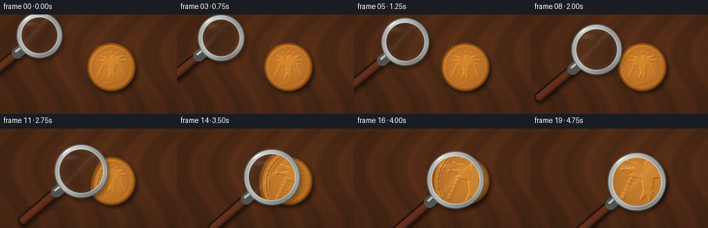
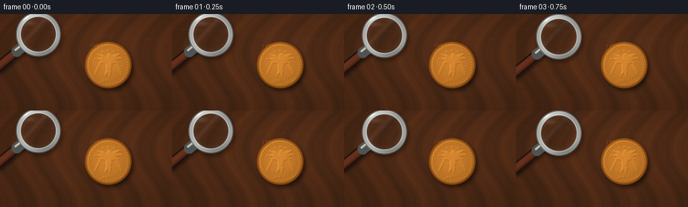

CODING AGENTS AS PIXEL WORLD MODELS
traex/GPT-5.6-Sol · phygen_069
点击播放 · 原生 RGB 像素
逐轮保存的候选
回放视频、检查图与代码变化。
每份候选均可单独播放。实际图片检查记录在下方工具轨迹中。
候选 01播放与检查图
点击播放 · 原生 RGB 像素


展开代码变化
--- 上一保存版本
+++ 本次保存版本
@@ -0,0 +1,316 @@
+from pathlib import Path
+import json, math
+import numpy as np
+import cv2
+from PIL import Image, ImageDraw, ImageFont, ImageFilter
+import artifact_io
+
+CASE_DIR = Path(__file__).resolve().parent
+SPEC = json.loads((CASE_DIR / 'task_spec.json').read_text())
+W, H = SPEC['width'], SPEC['height']
+N, FPS = SPEC['frames'], SPEC['fps']
+S = 4
+WW, HH = W*S, H*S
+rng = np.random.default_rng(6901)
+
+
+def blur(a, sigma):
+ return cv2.GaussianBlur(a, (0, 0), sigmaX=sigma, sigmaY=sigma, borderType=cv2.BORDER_REFLECT)
+
+
+def alpha_over(dst, src, alpha):
+ """Float RGB over float RGB, alpha in [0,1]."""
+ if alpha.ndim == 2:
+ alpha = alpha[..., None]
+ return dst * (1.0 - alpha) + src * alpha
+
+
+def pil_mask(draw_fn):
+ im = Image.new('L', (WW, HH), 0)
+ draw_fn(ImageDraw.Draw(im))
+ return np.asarray(im, dtype=np.float32) / 255.0
+
+
+def circle_mask(cx, cy, radius, feather=0.0):
+ yy, xx = np.mgrid[0:HH, 0:WW]
+ d = np.sqrt((xx-cx)**2 + (yy-cy)**2)
+ if feather <= 0:
+ return (d <= radius).astype(np.float32)
+ return np.clip((radius + feather - d) / feather, 0, 1).astype(np.float32)
+
+
+def shift_image(a, dx, dy):
+ return cv2.warpAffine(a, np.float32([[1,0,dx],[0,1,dy]]), (WW,HH),
+ flags=cv2.INTER_LINEAR, borderMode=cv2.BORDER_CONSTANT)
+
+
+def line_mask(p0, p1, width, endcaps=True):
+ im = Image.new('L', (WW, HH), 0)
+ d = ImageDraw.Draw(im)
+ d.line([p0, p1], fill=255, width=max(1,int(width)))
+ if endcaps:
+ rr = width/2
+ for x,y in (p0,p1):
+ d.ellipse((x-rr,y-rr,x+rr,y+rr), fill=255)
+ return np.asarray(im, dtype=np.float32)/255.0
+
+# -----------------------------------------------------------------------------
+# Static macro scene: warm walnut, directional studio light, and fine grain.
+yy, xx = np.mgrid[0:HH, 0:WW].astype(np.float32)
+xn, yn = xx/WW, yy/HH
+large_noise = blur(rng.normal(0,1,(HH,WW)).astype(np.float32), 32*S)
+medium_noise = blur(rng.normal(0,1,(HH,WW)).astype(np.float32), 4*S)
+fine_noise = rng.normal(0,1,(HH,WW)).astype(np.float32)
+# flowing walnut grain, slightly diagonal and irregular
+flow = xx + 0.18*yy + 28*S*np.sin(yy/(32*S))
+grain = (np.sin(flow/(8.5*S)) + .48*np.sin(flow/(3.1*S)+1.2) +
+ .22*np.sin(flow/(1.25*S)+2.4))
+grain *= .50 + .50*blur(rng.random((HH,WW)).astype(np.float32), 13*S)
+vignette = 1.0 - .20*((xn-.52)**2 + (yn-.48)**2)
+light_pool = np.exp(-(((xn-.62)/.68)**2 + ((yn-.32)/.65)**2))
+base_luma = 0.78 + .15*light_pool + .04*large_noise + .028*medium_noise + .018*grain
+wood_color = np.zeros((HH,WW,3), np.float32)
+wood_color[...,0] = 89*base_luma + 7*grain + 1.5*fine_noise
+wood_color[...,1] = 48*base_luma + 3.0*grain + .8*fine_noise
+wood_color[...,2] = 25*base_luma + 1.0*grain + .4*fine_noise
+wood_color *= vignette[...,None]
+# soft diagonal seam/scratch details in the wood
+for sy, strength in [(31,4.0),(120,-3.2)]:
+ dist = np.abs((yy/S - sy) - .07*(xx/S-128))
+ wood_color += (strength*np.exp(-(dist/.7)**2))[...,None] * np.array([1,.60,.30],np.float32)
+scene = wood_color
+
+# -----------------------------------------------------------------------------
+# Coin shadow and procedural minted bronze coin.
+CCX, CCY, CR = 161*S, 76*S, 34*S
+r = np.sqrt((xx-CCX)**2 + (yy-CCY)**2)
+theta = np.arctan2(yy-CCY, xx-CCX)
+coin_mask = np.clip((CR + 1.2*S-r)/(1.2*S),0,1).astype(np.float32)
+shadow = shift_image(coin_mask, 3.2*S, 4.0*S)
+shadow = blur(shadow, 3.2*S) * .58
+scene = alpha_over(scene, np.zeros_like(scene), shadow)
+
+# mottled, gently worn metal surface
+metal_noise = (blur(rng.normal(0,1,(HH,WW)).astype(np.float32), .65*S)*3.0 +
+ blur(rng.normal(0,1,(HH,WW)).astype(np.float32), 3.0*S)*3.0 +
+ rng.normal(0,.75,(HH,WW)).astype(np.float32))
+rad = r/CR
+incidence = np.clip(1-rad**2,0,1)
+dirlight = .50 - .38*((xx-CCX)/CR) - .48*((yy-CCY)/CR)
+metal = np.zeros_like(scene)
+metal[...,0] = 166 + 29*incidence + 16*dirlight + metal_noise
+metal[...,1] = 99 + 22*incidence + 11*dirlight + .64*metal_noise
+metal[...,2] = 31 + 10*incidence + 5*dirlight + .25*metal_noise
+# darker oxidized outer edge and alternating reeded edge glints
+edge = np.clip((rad-.88)/.12,0,1)
+reeds = .5 + .5*np.cos(92*theta + .4)
+metal -= edge[...,None] * np.array([31,25,14],np.float32)
+metal += (edge*reeds*12)[...,None] * np.array([1,.71,.28],np.float32)
+# brushed circular microtexture
+brush = (np.sin(2*np.pi*r/(.72*S)+3*np.sin(theta*5))*1.8 +
+ np.sin(2*np.pi*r/(1.73*S))*1.0) * np.clip(1-rad,0,1)
+metal += brush[...,None]*np.array([1,.72,.30],np.float32)
+scene = alpha_over(scene, metal, coin_mask)
+
+# Raised rims and detailed emblem masks.
+def make_relief():
+ im = Image.new('L',(WW,HH),0); d = ImageDraw.Draw(im)
+ c=(CCX,CCY)
+ # inner beaded/ridged perimeter
+ d.ellipse((CCX-30*S,CCY-30*S,CCX+30*S,CCY+30*S), outline=165, width=1*S)
+ d.ellipse((CCX-27.5*S,CCY-27.5*S,CCX+27.5*S,CCY+27.5*S), outline=95, width=1*S)
+ for a in np.linspace(0,2*np.pi,42,endpoint=False):
+ bx=CCX+29*S*np.cos(a); by=CCY+29*S*np.sin(a)
+ rr=0.72*S
+ d.ellipse((bx-rr,by-rr,bx+rr,by+rr),fill=185)
+ # heraldic eagle: broad wings, body, head, beak, tail
+ ptsL=[(160,66),(153,61),(145,60),(151,65),(143,66),(152,70),(146,72),(158,74)]
+ ptsR=[(163,66),(170,60),(179,59),(173,64),(182,65),(172,69),(178,72),(165,74)]
+ d.polygon([(x*S,y*S) for x,y in ptsL], fill=205)
+ d.polygon([(x*S,y*S) for x,y in ptsR], fill=205)
+ d.ellipse((157*S,65*S,166*S,86*S),fill=205)
+ d.ellipse((159*S,59*S,166*S,67*S),fill=205)
+ d.polygon([(165*S,61*S),(170*S,63*S),(165*S,65*S)],fill=205)
+ d.polygon([(158*S,83*S),(155*S,92*S),(161*S,87*S),(163*S,93*S),(166*S,84*S)],fill=195)
+ # feather ribs, shield and central star/sun
+ for xoff in (-1,1):
+ pass
+ d.ellipse((159.4*S,72*S,164.2*S,80*S),outline=245,width=1*S)
+ d.polygon([(161.8*S,72*S),(163.1*S,75.4*S),(166.5*S,75.5*S),(163.8*S,77.5*S),
+ (164.8*S,81*S),(161.8*S,79*S),(158.9*S,81*S),(159.8*S,77.5*S),
+ (157.2*S,75.5*S),(160.5*S,75.4*S)],fill=220)
+ # wreath stems and individual laurel leaves
+ d.arc((136*S,61*S,162*S,102*S),65,145,fill=145,width=1*S)
+ d.arc((162*S,61*S,188*S,102*S),35,115,fill=145,width=1*S)
+ for side in (-1,1):
+ for j in range(7):
+ a=np.deg2rad(112 - j*10)
+ bx=CCX + side*(19+j*.6)*S*np.cos(a-.45)
+ by=CCY + (14+j*.3)*S*np.sin(a+.10)
+ # explicit pleasant lower-side arcs
+ py=(91-j*3.0)*S
+ px=(143+j*1.4 if side==-1 else 179-j*1.4)*S
+ leaf=[(px,py),(px+side*4*S,py-1.5*S),(px+side*1.0*S,py-4*S)]
+ d.polygon(leaf,fill=155)
+ # small stars high on the field
+ for a in np.linspace(np.deg2rad(205),np.deg2rad(335),7):
+ sx=CCX+22*S*np.cos(a); sy=CCY+22*S*np.sin(a)
+ rr=.95*S
+ d.ellipse((sx-rr,sy-rr,sx+rr,sy+rr),fill=200)
+ return np.asarray(im,dtype=np.float32)/255.
+
+relief = make_relief()
+# Tiny minted lettering is deliberately readable primarily through the lens.
+text_im=Image.new('L',(WW,HH),0); td=ImageDraw.Draw(text_im)
+font_path='/usr/share/fonts/truetype/dejavu/DejaVuSerif-Bold.ttf'
+try:
+ f_top=ImageFont.truetype(font_path,5*S)
+ f_bottom=ImageFont.truetype(font_path,4*S)
+except OSError:
+ f_top=f_bottom=ImageFont.load_default()
+for txt, fnt, cy in [('LIBERTY',f_top,47.5*S),('2026',f_bottom,99*S)]:
+ box=td.textbbox((0,0),txt,font=fnt,stroke_width=0)
+ tw=box[2]-box[0]
+ td.text((CCX-tw/2,cy),txt,font=fnt,fill=185,anchor='mm')
+relief=np.maximum(relief,np.asarray(text_im,dtype=np.float32)/255.)
+
+# Embossing: bright upper-left shoulders, dark lower-right shoulders.
+sh = shift_image(relief, .85*S, .85*S)
+hi = np.clip(relief-sh,0,1)
+lo = np.clip(sh-relief,0,1)
+scene += (11*relief + 47*hi - 39*lo)[...,None]*np.array([1,.72,.32],np.float32)
+# Incised feather/filigree lines with paired shadow/highlight.
+inc_im=Image.new('L',(WW,HH),0); idr=ImageDraw.Draw(inc_im)
+for j in range(5):
+ y0=(64+j*2.15)*S
+ idr.line([(151*S,y0),(159*S,(70+j*1.25)*S)],fill=190,width=max(1,S//2))
+ idr.line([(173*S,y0),(165*S,(70+j*1.25)*S)],fill=190,width=max(1,S//2))
+for x0 in (159.5,162,164.5):
+ idr.line([(x0*S,68*S),((x0-.8)*S,84*S)],fill=150,width=max(1,S//2))
+inc=np.asarray(inc_im,dtype=np.float32)/255.
+scene -= inc[...,None]*np.array([23,17,8],np.float32)
+scene += shift_image(inc,-.55*S,-.55*S)[...,None]*np.array([15,11,5],np.float32)
+# crisp outer rim shoulders
+rim_hi=np.exp(-((r-(31.2*S))/(.55*S))**2)
+rim_lo=np.exp(-((r-(32.9*S))/(.65*S))**2)
+scene += rim_hi[...,None]*np.array([31,22,8],np.float32)*coin_mask[...,None]
+scene -= rim_lo[...,None]*np.array([26,19,9],np.float32)*coin_mask[...,None]
+
+# A few tiny patina pits make the magnified surface feel tactile.
+pit_im=Image.new('L',(WW,HH),0); pd=ImageDraw.Draw(pit_im)
+for _ in range(46):
+ a=rng.uniform(0,2*np.pi); rr=CR*rng.uniform(.12,.88)**.5
+ px=CCX+rr*np.cos(a); py=CCY+rr*np.sin(a)
+ pr=rng.uniform(.12,.34)*S
+ pd.ellipse((px-pr,py-pr,px+pr,py+pr),fill=int(rng.uniform(50,125)))
+pits=np.asarray(pit_im,dtype=np.float32)/255.
+scene -= pits[...,None]*np.array([19,13,5],np.float32)
+scene = np.clip(scene,0,255)
+scene_detailed = scene.astype(np.float32)
+# Outside the glass, macro depth of field is slightly soft. The detailed source
+# remains available to the optical sampling inside the magnifier.
+scene_soft = blur(scene_detailed, .42*S)
+scene_soft = .84*scene_detailed + .16*scene_soft
+
+# reusable coordinate fields for lens optics
+Y,X=np.mgrid[0:HH,0:WW].astype(np.float32)
+frames=[]
+for i in range(N):
+ t=i/(N-1)
+ p=t*t*(3-2*t) # smooth hand-guided approach
+ # slight curved descent and a tiny natural lateral settle
+ cx=(57 + 96*p + 1.2*np.sin(np.pi*p))*S
+ cy=(30 + 47*p + 2.8*np.sin(np.pi*p))*S
+ rad_l=(31.0 + 9.0*p)*S
+ mag=1.24 + .58*p
+ angle=np.deg2rad(141 - 2.0*p)
+ ux,uy=np.cos(angle),np.sin(angle)
+ frame=scene_soft.copy()
+
+ # shadow from handle and rim falls consistently down-right.
+ attach=(cx+ux*(rad_l-2.5*S), cy+uy*(rad_l-2.5*S))
+ end=(attach[0]+ux*76*S, attach[1]+uy*76*S)
+ hshadow=line_mask((attach[0]+2.4*S,attach[1]+3.4*S),
+ (end[0]+2.4*S,end[1]+3.4*S),14*S)
+ hshadow=blur(hshadow,2.6*S)*.52
+ frame=alpha_over(frame,np.zeros_like(frame),hshadow)
+ lshadow=circle_mask(cx+2.7*S,cy+3.8*S,rad_l+2.5*S,1.2*S)
+ lshadow=blur(lshadow,2.7*S)*.34
+ frame=alpha_over(frame,np.zeros_like(frame),lshadow)
+
+ # Mahogany handle with dark edging, warm core, longitudinal highlight.
+ outer=line_mask(attach,end,15*S)
+ inner=line_mask(attach,end,10.5*S)
+ core=line_mask((attach[0]-uy*1.4*S,attach[1]+ux*1.4*S),
+ (end[0]-uy*1.4*S,end[1]+ux*1.4*S),7*S)
+ handle_rgb=np.zeros_like(frame)+np.array([30,18,13],np.float32)
+ frame=alpha_over(frame,handle_rgb,outer*.96)
+ woodh=np.zeros_like(frame)+np.array([83,37,22],np.float32)
+ frame=alpha_over(frame,woodh,inner*.98)
+ highh=np.zeros_like(frame)+np.array([139,74,42],np.float32)
+ frame=alpha_over(frame,highh,core*.32)
+ # steel collar at neck
+ coll0=(cx+ux*(rad_l+1*S),cy+uy*(rad_l+1*S))
+ coll1=(cx+ux*(rad_l+10*S),cy+uy*(rad_l+10*S))
+ collar=line_mask(coll0,coll1,16*S)
+ frame=alpha_over(frame,np.zeros_like(frame)+np.array([80,83,82],np.float32),collar)
+ collar_hi=line_mask((coll0[0]-uy*3*S,coll0[1]+ux*3*S),
+ (coll1[0]-uy*3*S,coll1[1]+ux*3*S),3*S)
+ frame=alpha_over(frame,np.zeros_like(frame)+np.array([225,221,204],np.float32),collar_hi*.8)
+
+ # Convex glass mapping: magnification increases slightly as the glass nears.
+ dx=X-cx; dy=Y-cy
+ rn2=(dx*dx+dy*dy)/(rad_l*rad_l)
+ barrel=1.0 + .045*np.clip(rn2,0,1)
+ mapx=(cx + dx/mag*barrel).astype(np.float32)
+ mapy=(cy + dy/mag*barrel).astype(np.float32)
+ optical=cv2.remap(scene_detailed,mapx,mapy,cv2.INTER_CUBIC,
+ borderMode=cv2.BORDER_REFLECT)
+ # progressive focus and microcontrast inside the lens
+ softopt=blur(optical,(.72-.34*p)*S)
+ optical=optical + (optical-softopt)*(.22+.30*p)
+ optical[...,0]*=.985; optical[...,1]*=1.008; optical[...,2]*=1.045
+ interior_r=rad_l-4.7*S
+ lensmask=circle_mask(cx,cy,interior_r,1.2*S)
+ frame=alpha_over(frame,np.clip(optical,0,255),lensmask*.965)
+
+ # Subtle blue glass vignette and moving studio reflections.
+ dist=np.sqrt(dx*dx+dy*dy)
+ edgeglass=np.clip((dist-(interior_r-7*S))/(7*S),0,1)*lensmask
+ glass_col=np.zeros_like(frame)+np.array([145,185,195],np.float32)
+ frame=alpha_over(frame,glass_col,edgeglass*.075)
+ # broad diagonal reflection stays translucent so details remain visible
+ stripe=np.exp(-((.72*dx+.69*dy+8*S-7*S*p)/(3.2*S))**2)
+ stripe*=lensmask*(dist<interior_r-1*S)
+ frame += stripe[...,None]*np.array([9,11,12],np.float32)
+ glint=np.exp(-(((X-(cx-.42*rad_l))/(10*S))**2+((Y-(cy-.54*rad_l))/(3.5*S))**2))
+ glint*=lensmask
+ frame += glint[...,None]*np.array([19,21,22],np.float32)
+
+ # Multi-banded metallic rim with angle-dependent polished highlights.
+ q=dist
+ ring=((q>=rad_l-4.8*S)&(q<=rad_l+2.2*S)).astype(np.float32)
+ # anti-alias broad ring boundaries at render resolution
+ ring=np.clip((q-(rad_l-5.2*S))/(.7*S),0,1)*np.clip((rad_l+2.6*S-q)/(.7*S),0,1)
+ ang=np.arctan2(dy,dx)
+ spec=.50+.31*np.cos(ang+2.35)+.18*np.cos(3*ang-.6)
+ radial_band=.5+.5*np.cos(np.pi*np.clip((q-(rad_l-5*S))/(7*S),0,1)*2.0)
+ val=116+74*np.clip(spec,0,1)+24*radial_band
+ rim_rgb=np.stack([val+9,val+12,val+10],axis=-1)
+ frame=alpha_over(frame,rim_rgb,ring*.98)
+ outer_line=np.exp(-((q-(rad_l+1.6*S))/(.48*S))**2)
+ inner_line=np.exp(-((q-(rad_l-4.5*S))/(.42*S))**2)
+ frame=alpha_over(frame,np.zeros_like(frame)+np.array([48,52,52],np.float32),outer_line*.92)
+ frame=alpha_over(frame,np.zeros_like(frame)+np.array([233,234,219],np.float32),inner_line*.68)
+ # a concentrated chrome glint on the upper-left rim
+ rim_glint=np.exp(-((q-(rad_l-.7*S))/(1.05*S))**2)*np.exp(-((ang+2.20)/.20)**2)
+ frame += rim_glint[...,None]*np.array([66,68,64],np.float32)
+
+ # downsample for clean cinematic antialiasing
+ out=cv2.resize(np.clip(frame,0,255).astype(np.uint8),(W,H),interpolation=cv2.INTER_AREA)
+ frames.append(out)
+
+frames=np.stack(frames).astype(np.uint8)
+assert frames.shape==(N,H,W,3)
+artifact_io.save(frames, CASE_DIR)
+print(f'Saved {N} RGB frames at {W}x{H}, {FPS:g} fps to {CASE_DIR}')
可观测工具轨迹
实际执行的命令与返回图片。
命令 1exit 0
/bin/bash -lc "cat prompt.txt && printf '\\n--- GENERATION_RULES.md ---\\n' && cat GENERATION_RULES.md && printf '\\n--- task_spec.json ---\\n' && cat task_spec.json"
命令 2exit 0
/bin/bash -lc "find . -maxdepth 3 -type f -printf '%p\\n' | sort && printf '\\n--- tools ---\\n' && command -v ffmpeg || true && command -v blender || true && command -v python3 || true && python3 - <<'PY' mods=['numpy','cv2','PIL','imageio','matplotlib','scipy'] for m in mods: try: x=__import__(m) print(m, getattr(x,'__version__','ok')) except Exception as e: print(m,'MISSING',e) PY"
命令 3exit 0
/bin/bash -lc "sed -n '1,260p' artifact_io.py"
命令 4exit 0
/bin/bash -lc "cat > generate.py <<'PY'
from pathlib import Path
import json, math
import numpy as np
import cv2
from PIL import Image, ImageDraw, ImageFont, ImageFilter
import artifact_io
CASE_DIR = Path(__file__).resolve().parent
SPEC = json.loads((CASE_DIR / 'task_spec.json').read_text())
W, H = SPEC['width'], SPEC['height']
N, FPS = SPEC['frames'], SPEC['fps']
S = 4
WW, HH = W*S, H*S
rng = np.random.default_rng(6901)
def blur(a, sigma):
return cv2.GaussianBlur(a, (0, 0), sigmaX=sigma, sigmaY=sigma, borderType=cv2.BORDER_REFLECT)
def alpha_over(dst, src, alpha):
\"\"\"Float RGB over float RGB, alpha in [0,1].\"\"\"
if alpha.ndim == 2:
alpha = alpha[..., None]
return dst * (1.0 - alpha) + src * alpha
def pil_mask(draw_fn):
im = Image.new('L', (WW, HH), 0)
draw_fn(ImageDraw.Draw(im))
return np.asarray(im, dtype=np.float32) / 255.0
def circle_mask(cx, cy, radius, feather=0.0):
yy, xx = np.mgrid[0:HH, 0:WW]
d = np.sqrt((xx-cx)**2 + (yy-cy)**2)
if feather <= 0:
return (d <= radius).astype(np.float32)
return np.clip((radius + feather - d) / feather, 0, 1).astype(np.float32)
def shift_image(a, dx, dy):
return cv2.warpAffine(a, np.float32([[1,0,dx],[0,1,dy]]), (WW,HH),
flags=cv2.INTER_LINEAR, borderMode=cv2.BORDER_CONSTANT)
def line_mask(p0, p1, width, endcaps=True):
im = Image.new('L', (WW, HH), 0)
d = ImageDraw.Draw(im)
d.line([p0, p1], fill=255, width=max(1,int(width)))
if endcaps:
rr = width/2
for x,y in (p0,p1):
d.ellipse((x-rr,y-rr,x+rr,y+rr), fill=255)
return np.asarray(im, dtype=np.float32)/255.0
# -----------------------------------------------------------------------------
# Static macro scene: warm walnut, directional studio light, and fine grain.
yy, xx = np.mgrid[0:HH, 0:WW].astype(np.float32)
xn, yn = xx/WW, yy/HH
large_noise = blur(rng.normal(0,1,(HH,WW)).astype(np.float32), 32*S)
medium_noise = blur(rng.normal(0,1,(HH,WW)).astype(np.float32), 4*S)
fine_noise = rng.normal(0,1,(HH,WW)).astype(np.float32)
# flowing walnut grain, slightly diagonal and irregular
flow = xx + 0.18*yy + 28*S*np.sin(yy/(32*S))
grain = (np.sin(flow/(8.5*S)) + .48*np.sin(flow/(3.1*S)+1.2) +
.22*np.sin(flow/(1.25*S)+2.4))
grain *= .50 + .50*blur(rng.random((HH,WW)).astype(np.float32), 13*S)
vignette = 1.0 - .20*((xn-.52)**2 + (yn-.48)**2)
light_pool = np.exp(-(((xn-.62)/.68)**2 + ((yn-.32)/.65)**2))
base_luma = 0.78 + .15*light_pool + .04*large_noise + .028*medium_noise + .018*grain
wood_color = np.zeros((HH,WW,3), np.float32)
wood_color[...,0] = 89*base_luma + 7*grain + 1.5*fine_noise
wood_color[...,1] = 48*base_luma + 3.0*grain + .8*fine_noise
wood_color[...,2] = 25*base_luma + 1.0*grain + .4*fine_noise
wood_color *= vignette[...,None]
# soft diagonal seam/scratch details in the wood
for sy, strength in [(31,4.0),(120,-3.2)]:
dist = np.abs((yy/S - sy) - .07*(xx/S-128))
wood_color += (strength*np.exp(-(dist/.7)**2))[...,None] * np.array([1,.60,.30],np.float32)
scene = wood_color
# -----------------------------------------------------------------------------
# Coin shadow and procedural minted bronze coin.
CCX, CCY, CR = 161*S, 76*S, 34*S
r = np.sqrt((xx-CCX)**2 + (yy-CCY)**2)
theta = np.arctan2(yy-CCY, xx-CCX)
coin_mask = np.clip((CR + 1.2*S-r)/(1.2*S),0,1).astype(np.float32)
shadow = shift_image(coin_mask, 3.2*S, 4.0*S)
shadow = blur(shadow, 3.2*S) * .58
scene = alpha_over(scene, np.zeros_like(scene), shadow)
# mottled, gently worn metal surface
metal_noise = (blur(rng.normal(0,1,(HH,WW)).astype(np.float32), .65*S)*3.0 +
blur(rng.normal(0,1,(HH,WW)).astype(np.float32), 3.0*S)*3.0 +
rng.normal(0,.75,(HH,WW)).astype(np.float32))
rad = r/CR
incidence = np.clip(1-rad**2,0,1)
dirlight = .50 - .38*((xx-CCX)/CR) - .48*((yy-CCY)/CR)
metal = np.zeros_like(scene)
metal[...,0] = 166 + 29*incidence + 16*dirlight + metal_noise
metal[...,1] = 99 + 22*incidence + 11*dirlight + .64*metal_noise
metal[...,2] = 31 + 10*incidence + 5*dirlight + .25*metal_noise
# darker oxidized outer edge and alternating reeded edge glints
edge = np.clip((rad-.88)/.12,0,1)
reeds = .5 + .5*np.cos(92*theta + .4)
metal -= edge[...,None] * np.array([31,25,14],np.float32)
metal += (edge*reeds*12)[...,None] * np.array([1,.71,.28],np.float32)
# brushed circular microtexture
brush = (np.sin(2*np.pi*r/(.72*S)+3*np.sin(theta*5))*1.8 +
np.sin(2*np.pi*r/(1.73*S))*1.0) * np.clip(1-rad,0,1)
metal += brush[...,None]*np.array([1,.72,.30],np.float32)
scene = alpha_over(scene, metal, coin_mask)
# Raised rims and detailed emblem masks.
def make_relief():
im = Image.new('L',(WW,HH),0); d = ImageDraw.Draw(im)
c=(CCX,CCY)
# inner beaded/ridged perimeter
d.ellipse((CCX-30*S,CCY-30*S,CCX+30*S,CCY+30*S), outline=165, width=1*S)
d.ellipse((CCX-27.5*S,CCY-27.5*S,CCX+27.5*S,CCY+27.5*S), outline=95, width=1*S)
for a in np.linspace(0,2*np.pi,42,endpoint=False):
bx=CCX+29*S*np.cos(a); by=CCY+29*S*np.sin(a)
rr=0.72*S
d.ellipse((bx-rr,by-rr,bx+rr,by+rr),fill=185)
# heraldic eagle: broad wings, body, head, beak, tail
ptsL=[(160,66),(153,61),(145,60),(151,65),(143,66),(152,70),(146,72),(158,74)]
ptsR=[(163,66),(170,60),(179,59),(173,64),(182,65),(172,69),(178,72),(165,74)]
d.polygon([(x*S,y*S) for x,y in ptsL], fill=205)
d.polygon([(x*S,y*S) for x,y in ptsR], fill=205)
d.ellipse((157*S,65*S,166*S,86*S),fill=205)
d.ellipse((159*S,59*S,166*S,67*S),fill=205)
d.polygon([(165*S,61*S),(170*S,63*S),(165*S,65*S)],fill=205)
d.polygon([(158*S,83*S),(155*S,92*S),(161*S,87*S),(163*S,93*S),(166*S,84*S)],fill=195)
# feather ribs, shield and central star/sun
for xoff in (-1,1):
pass
d.ellipse((159.4*S,72*S,164.2*S,80*S),outline=245,width=1*S)
d.polygon([(161.8*S,72*S),(163.1*S,75.4*S),(166.5*S,75.5*S),(163.8*S,77.5*S),
(164.8*S,81*S),(161.8*S,79*S),(158.9*S,81*S),(159.8*S,77.5*S),
(157.2*S,75.5*S),(160.5*S,75.4*S)],fill=220)
# wreath stems and individual laurel leaves
d.arc((136*S,61*S,162*S,102*S),65,145,fill=145,width=1*S)
d.arc((162*S,61*S,188*S,102*S),35,115,fill=145,width=1*S)
for side in (-1,1):
for j in range(7):
a=np.deg2rad(112 - j*10)
bx=CCX + side*(19+j*.6)*S*np.cos(a-.45)
by=CCY + (14+j*.3)*S*np.sin(a+.10)
# explicit pleasant lower-side arcs
py=(91-j*3.0)*S
px=(143+j*1.4 if side==-1 else 179-j*1.4)*S
leaf=[(px,py),(px+side*4*S,py-1.5*S),(px+side*1.0*S,py-4*S)]
d.polygon(leaf,fill=155)
# small stars high on the field
for a in np.linspace(np.deg2rad(205),np.deg2rad(335),7):
sx=CCX+22*S*np.cos(a); sy=CCY+22*S*np.sin(a)
rr=.95*S
d.ellipse((sx-rr,sy-rr,sx+rr,sy+rr),fill=200)
return np.asarray(im,dtype=np.float32)/255.
relief = make_relief()
# Tiny minted lettering is deliberately readable primarily through the lens.
text_im=Image.new('L',(WW,HH),0); td=ImageDraw.Draw(text_im)
font_path='/usr/share/fonts/truetype/dejavu/DejaVuSerif-Bold.ttf'
try:
f_top=ImageFont.truetype(font_path,5*S)
f_bottom=ImageFont.truetype(font_path,4*S)
except OSError:
f_top=f_bottom=ImageFont.load_default()
for txt, fnt, cy in [('LIBERTY',f_top,47.5*S),('2026',f_bottom,99*S)]:
box=td.textbbox((0,0),txt,font=fnt,stroke_width=0)
tw=box[2]-box[0]
td.text((CCX-tw/2,cy),txt,font=fnt,fill=185,anchor='mm')
relief=np.maximum(relief,np.asarray(text_im,dtype=np.float32)/255.)
# Embossing: bright upper-left shoulders, dark lower-right shoulders.
sh = shift_image(relief, .85*S, .85*S)
hi = np.clip(relief-sh,0,1)
lo = np.clip(sh-relief,0,1)
scene += (11*relief + 47*hi - 39*lo)[...,None]*np.array([1,.72,.32],np.float32)
# Incised feather/filigree lines with paired shadow/highlight.
inc_im=Image.new('L',(WW,HH),0); idr=ImageDraw.Draw(inc_im)
for j in range(5):
y0=(64+j*2.15)*S
idr.line([(151*S,y0),(159*S,(70+j*1.25)*S)],fill=190,width=max(1,S//2))
idr.line([(173*S,y0),(165*S,(70+j*1.25)*S)],fill=190,width=max(1,S//2))
for x0 in (159.5,162,164.5):
idr.line([(x0*S,68*S),((x0-.8)*S,84*S)],fill=150,width=max(1,S//2))
inc=np.asarray(inc_im,dtype=np.float32)/255.
scene -= inc[...,None]*np.array([23,17,8],np.float32)
scene += shift_image(inc,-.55*S,-.55*S)[...,None]*np.array([15,11,5],np.float32)
# crisp outer rim shoulders
rim_hi=np.exp(-((r-(31.2*S))/(.55*S))**2)
rim_lo=np.exp(-((r-(32.9*S))/(.65*S))**2)
scene += rim_hi[...,None]*np.array([31,22,8],np.float32)*coin_mask[...,None]
scene -= rim_lo[...,None]*np.array([26,19,9],np.float32)*coin_mask[...,None]
# A few tiny patina pits make the magnified surface feel tactile.
pit_im=Image.new('L',(WW,HH),0); pd=ImageDraw.Draw(pit_im)
for _ in range(46):
a=rng.uniform(0,2*np.pi); rr=CR*rng.uniform(.12,.88)**.5
px=CCX+rr*np.cos(a); py=CCY+rr*np.sin(a)
pr=rng.uniform(.12,.34)*S
pd.ellipse((px-pr,py-pr,px+pr,py+pr),fill=int(rng.uniform(50,125)))
pits=np.asarray(pit_im,dtype=np.float32)/255.
scene -= pits[...,None]*np.array([19,13,5],np.float32)
scene = np.clip(scene,0,255)
scene_detailed = scene.astype(np.float32)
# Outside the glass, macro depth of field is slightly soft. The detailed source
# remains available to the optical sampling inside the magnifier.
scene_soft = blur(scene_detailed, .42*S)
scene_soft = .84*scene_detailed + .16*scene_soft
# reusable coordinate fields for lens optics
Y,X=np.mgrid[0:HH,0:WW].astype(np.float32)
frames=[]
for i in range(N):
t=i/(N-1)
p=t*t*(3-2*t) # smooth hand-guided approach
# slight curved descent and a tiny natural lateral settle
cx=(57 + 96*p + 1.2*np.sin(np.pi*p))*S
cy=(30 + 47*p + 2.8*np.sin(np.pi*p))*S
rad_l=(31.0 + 9.0*p)*S
mag=1.24 + .58*p
angle=np.deg2rad(141 - 2.0*p)
ux,uy=np.cos(angle),np.sin(angle)
frame=scene_soft.copy()
# shadow from handle and rim falls consistently down-right.
attach=(cx+ux*(rad_l-2.5*S), cy+uy*(rad_l-2.5*S))
end=(attach[0]+ux*76*S, attach[1]+uy*76*S)
hshadow=line_mask((attach[0]+2.4*S,attach[1]+3.4*S),
(end[0]+2.4*S,end[1]+3.4*S),14*S)
hshadow=blur(hshadow,2.6*S)*.52
frame=alpha_over(frame,np.zeros_like(frame),hshadow)
lshadow=circle_mask(cx+2.7*S,cy+3.8*S,rad_l+2.5*S,1.2*S)
lshadow=blur(lshadow,2.7*S)*.34
frame=alpha_over(frame,np.zeros_like(frame),lshadow)
# Mahogany handle with dark edging, warm core, longitudinal highlight.
outer=line_mask(attach,end,15*S)
inner=line_mask(attach,end,10.5*S)
core=line_mask((attach[0]-uy*1.4*S,attach[1]+ux*1.4*S),
(end[0]-uy*1.4*S,end[1]+ux*1.4*S),7*S)
handle_rgb=np.zeros_like(frame)+np.array([30,18,13],np.float32)
frame=alpha_over(frame,handle_rgb,outer*.96)
woodh=np.zeros_like(frame)+np.array([83,37,22],np.float32)
frame=alpha_over(frame,woodh,inner*.98)
highh=np.zeros_like(frame)+np.array([139,74,42],np.float32)
frame=alpha_over(frame,highh,core*.32)
# steel collar at neck
coll0=(cx+ux*(rad_l+1*S),cy+uy*(rad_l+1*S))
coll1=(cx+ux*(rad_l+10*S),cy+uy*(rad_l+10*S))
collar=line_mask(coll0,coll1,16*S)
frame=alpha_over(frame,np.zeros_like(frame)+np.array([80,83,82],np.float32),collar)
collar_hi=line_mask((coll0[0]-uy*3*S,coll0[1]+ux*3*S),
(coll1[0]-uy*3*S,coll1[1]+ux*3*S),3*S)
frame=alpha_over(frame,np.zeros_like(frame)+np.array([225,221,204],np.float32),collar_hi*.8)
# Convex glass mapping: magnification increases slightly as the glass nears.
dx=X-cx; dy=Y-cy
rn2=(dx*dx+dy*dy)/(rad_l*rad_l)
barrel=1.0 + .045*np.clip(rn2,0,1)
mapx=(cx + dx/mag*barrel).astype(np.float32)
mapy=(cy + dy/mag*barrel).astype(np.float32)
optical=cv2.remap(scene_detailed,mapx,mapy,cv2.INTER_CUBIC,
borderMode=cv2.BORDER_REFLECT)
# progressive focus and microcontrast inside the lens
softopt=blur(optical,(.72-.34*p)*S)
optical=optical + (optical-softopt)*(.22+.30*p)
optical[...,0]*=.985; optical[...,1]*=1.008; optical[...,2]*=1.045
interior_r=rad_l-4.7*S
lensmask=circle_mask(cx,cy,interior_r,1.2*S)
frame=alpha_over(frame,np.clip(optical,0,255),lensmask*.965)
# Subtle blue glass vignette and moving studio reflections.
dist=np.sqrt(dx*dx+dy*dy)
edgeglass=np.clip((dist-(interior_r-7*S))/(7*S),0,1)*lensmask
glass_col=np.zeros_like(frame)+np.array([145,185,195],np.float32)
frame=alpha_over(frame,glass_col,edgeglass*.075)
# broad diagonal reflection stays translucent so details remain visible
stripe=np.exp(-((.72*dx+.69*dy+8*S-7*S*p)/(3.2*S))**2)
stripe*=lensmask*(dist<interior_r-1*S)
frame += stripe[...,None]*np.array([9,11,12],np.float32)
glint=np.exp(-(((X-(cx-.42*rad_l))/(10*S))**2+((Y-(cy-.54*rad_l))/(3.5*S))**2))
glint*=lensmask
frame += glint[...,None]*np.array([19,21,22],np.float32)
# Multi-banded metallic rim with angle-dependent polished highlights.
q=dist
ring=((q>=rad_l-4.8*S)&(q<=rad_l+2.2*S)).astype(np.float32)
# anti-alias broad ring boundaries at render resolution
ring=np.clip((q-(rad_l-5.2*S))/(.7*S),0,1)*np.clip((rad_l+2.6*S-q)/(.7*S),0,1)
ang=np.arctan2(dy,dx)
spec=.50+.31*np.cos(ang+2.35)+.18*np.cos(3*ang-.6)
radial_band=.5+.5*np.cos(np.pi*np.clip((q-(rad_l-5*S))/(7*S),0,1)*2.0)
val=116+74*np.clip(spec,0,1)+24*radial_band
rim_rgb=np.stack([val+9,val+12,val+10],axis=-1)
frame=alpha_over(frame,rim_rgb,ring*.98)
outer_line=np.exp(-((q-(rad_l+1.6*S))/(.48*S))**2)
inner_line=np.exp(-((q-(rad_l-4.5*S))/(.42*S))**2)
frame=alpha_over(frame,np.zeros_like(frame)+np.array([48,52,52],np.float32),outer_line*.92)
frame=alpha_over(frame,np.zeros_like(frame)+np.array([233,234,219],np.float32),inner_line*.68)
# a concentrated chrome glint on the upper-left rim
rim_glint=np.exp(-((q-(rad_l-.7*S))/(1.05*S))**2)*np.exp(-((ang+2.20)/.20)**2)
frame += rim_glint[...,None]*np.array([66,68,64],np.float32)
# downsample for clean cinematic antialiasing
out=cv2.resize(np.clip(frame,0,255).astype(np.uint8),(W,H),interpolation=cv2.INTER_AREA)
frames.append(out)
frames=np.stack(frames).astype(np.uint8)
assert frames.shape==(N,H,W,3)
artifact_io.save(frames, CASE_DIR)
print(f'Saved {N} RGB frames at {W}x{H}, {FPS:g} fps to {CASE_DIR}')
PY
python3 generate.py
python3 - <<'PY'
from pathlib import Path
import numpy as np
from PIL import Image
p=Path('.')
a=np.load('pixels.npz')['pixels']
print('pixels',a.shape,a.dtype,'files',len(list((p/'frames').glob('*.png'))))
ims=np.stack([np.array(Image.open(x)) for x in sorted((p/'frames').glob('*.png'))])
print('frames',ims.shape,ims.dtype,'range',ims.min(),ims.max(),'mean',ims.mean().round(2))
print('motion mean abs deltas',np.abs(np.diff(ims.astype(np.int16),axis=0)).mean((1,2,3)).round(3).tolist())
print('artifacts',[(x.name,x.stat().st_size) for x in [p/'pixels.npz',p/'inspection.png',p/'transition_check.png',p/'index.html']])
PY"保存候选 1 份；完成命令 4 次；可验证图片返回 0 张。原始 API 响应与完整日志保留在本地。